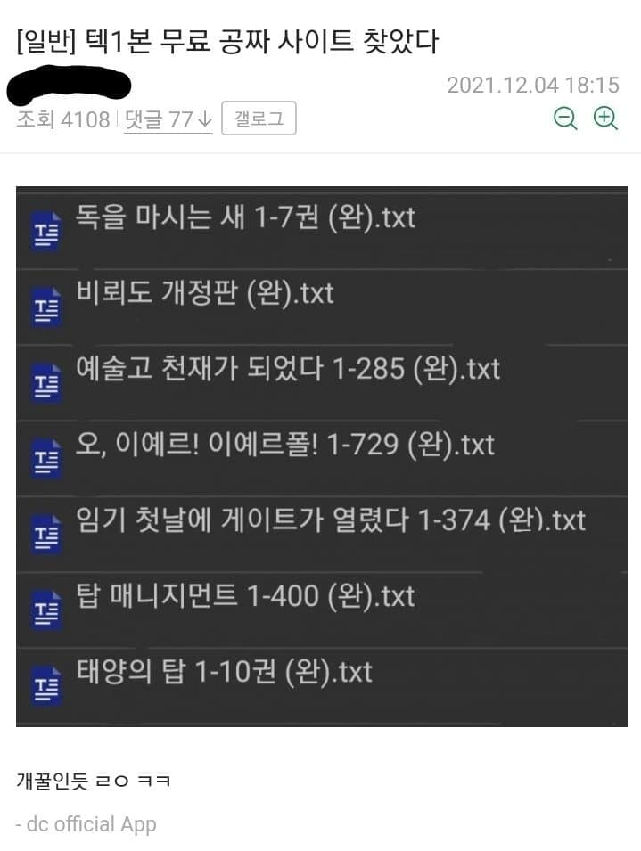

텍본 자랑하는 디시인
댓글
거 실례지만 몇번 지구입니까
탑매도 레전드긴하지 독자들 2번 통수치기 ㅋㅋㅋ
ㅋㅋㅋ 그거에 직격당했지 시발 환불도 안해주더라
비뢰도가... 완결이라고??
제발 나도 보여다오!!!!!!!!!!!!!
일해라 로키! 너희 아스가르드 놈들은 게으르구나!
탑매 작가 아우
씨발 독마새 니만 보지 말고 같이 보자고!!!!
소설 안봐서 잘 모르는데 아직 안나온 책 제목들 써 놓은게 웃음포인트 맞음?
안나왔거나 회차가 아예 안맞는거
저시절에 완결 하나도 안났고 완결 기약도 없던애들 완결로 가지고있다는거 ㅇㅇ
완결 안나고 20년넘게 연재중인 소설들
완결 안나고 연중 오래 된 책들임
베르세르크 (완)
와
회귀자 네이놈!
저거 업뎃한거 있더만ㅋㅋ
태양의탑은 이제 심지어 판매중단까지 때려서 다 내려갔더라 ㅋㅋㅋㅋㅋㅋ
룬의아이들 꼬라지 보면 기대하기도 어렵지만
걍 연중 때린거지 이름값만 높지 프로 의식은 없음
비뢰도 개새끼. 이새끼때매 무협 입문하고 비뢰도도 다샀는데 후속을 안내 이 개새끼가?
ㅋㅋㅋㅋ이래서 뭐든 완결되고봐야함
ai로 이영도 문체 학습시키고 새 시리즈 뽑아내라고 하면 뽑아내지 않을까?
나도 저 짤 보고 그 생각함 ㅋㅋ
토큰을 마시는 새 "써줘"
나도 헌터x헌터 완결편까지 스캔본 있음 ㅅㄱㅇ